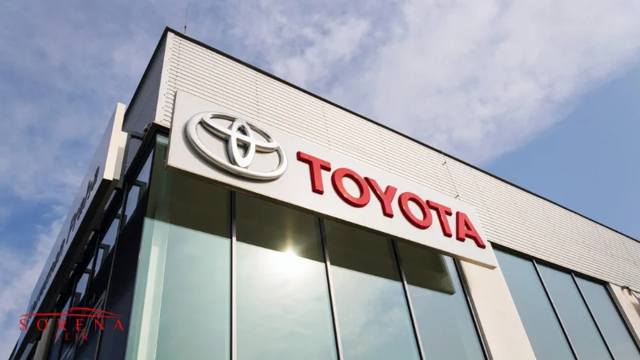

این شرکت چند ملیتی، یکی از بزرگترین و در عین حال معروفترین خودروسازان جهان است که بیش از 50 کارخانه مستقل در 30 نقطه مختلف جهان از جمله آمریکای شمالی، آمریکای لاتین، آفریقا، آسیا، اقیانوسیه و اروپا و بیش از 350 هزار نفر کارمند دارد. این شرکت که اخیرا جشن 75 سالگی خود را برگزار کرده است؛ همواره متعهد به نوآوری و استفاده از تکنولوژیهای پاک و بهروز در تولید محصولات خود بوده است. پیروی از شعار “مفهوم مدیریت ایمنی یکپارچه” نشانه تعهدی است که تویوتا نسبت به ایمنی محصولات خود دارد. جایگاه دوم در لیست بهترین برند خودرو در جهان در سال 2022 گواه کیفیت بالای تولیدات این کمپانی است. محصولات تویوتا میتوانند از طریق عملکرد فنی عالی، راحتی، ظاهر جذاب و ایمنی عالی خود تجربه رانندگی را برای مشتریان این شرکت دگرگون کنند. تویوتا موتورز سالانه 245 میلیارد دلار درآمد دارد.
